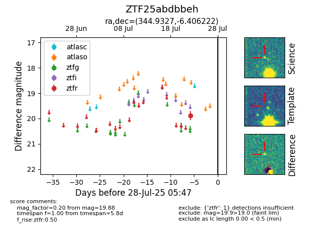

Target ZTF25abdbbeh at 2025-08-06 17:45, see:
FINK: fink-portal.org/ZTF25abdbbeh
Lasair: lasair-ztf.lsst.ac.uk/objects/ZTF25abdbbeh
ALeRCE: alerce.online/object/ZTF25abdbbeh
alt names
ZTF25abdbbeh (ztf,fink)
coordinates:
equatorial (ra, dec) = (344.9327,-6.40622)
galactic (l, b) = (65.8295,-56.33709)
photometry
last ztfr=19.88
1 ztfr detections
